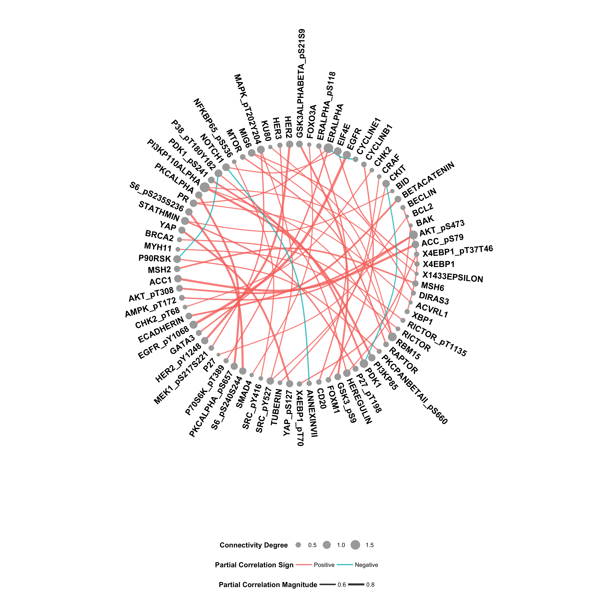

G Implementation
The GraphR (Graphical Regression) is a flexible approach which incorporates sample heterogenity and enables covariate-dependent graphs. Our regression-based method provides a functional mapping from the covariate space to precision matrix for different types of heterogeneous graphical model settings. GraphR imposes sparsity in both edge and covariate selection and computationally efficient via use of variational Bayes algorithms. The method is versatile to incorporate different type of covariates such as
(I) binary (control and disease specific graphs),
(II) categorical (category specific graphs such as cancer subtypes),
(III) univariate continuous (time varying graphs for single cell data),
(IV) categorical + univariate continuous (graphs changing over category such as cancer sub-types and continuous scale as biomarkers),
(V) multivariate continuous (spatial transcriptomics co-expression networks).
More details about the method can found in the Methods Section of the manuscript and Section A of the Supplementary Materials. GraphR is implemented as an open-source R package (Section G.1) and Shiny app (Section G.3).
G.1 GraphR package
G.1.1 Installation
You can install the released version of GraphR from (https://github.com/bayesrx/GraphR) with:
devtools::install_github("bayesrx/GraphR")
library(GraphR)G.1.2 GraphR_est() function
The GraphR_est() function can be used to estimate the graphical regression coefficients and inclusion probabilities of external covariates for the GraphR models. It is suggested to maintain \(n/pq >1\) and efficacy of the method increase with high values of \(n/pq\) ratio. For priors, we assume \(\pi \sim Beta(a_\pi, b_\pi)\) and \(\tau \sim \Gamma(a_\tau, b_\tau)\).
The mandatory inputs of estimation function are given below.
Features (nodes): Nodes of the graphs among which edges are built (e.g. a gene expression matrix of dimensions \(n \times p\)). Please standardize features before plugging into the function or set standardize_feature = TRUE in the function.
Cont_external and dis_external (continuous and discrete external covariates): An \(n \times q_1\) and an \(n \times q_2\) matrices of continuous and discrete external covariates respectively. \(q_1 + q_2 =q\). Please standardize continuous external covariates before plug into the estimation function or set standardize_external = TRUE in the function.
The optional inputs of estimation function are given below.
\(\boldsymbol a_{\boldsymbol \pi}\), \(\boldsymbol b_{\boldsymbol \pi}\): Hyper-parameters from \(\pi \sim Beta(a_\pi, b_\pi)\). By default \(a_\pi = 1, b_\pi = 4\).
\(\boldsymbol a_{\boldsymbol \tau}\), \(\boldsymbol b_{\boldsymbol \tau}\): Hyper-parameters from \(\tau \sim Gamma(a_\tau, b_\tau)\). By default \(a_\tau = 0.005, b_\tau = 0.005\).
Standardize_feature, standardize_external: Standardize features or continuous external covariates. Default as FALSE.
Max_iter: Maximum number of iterations. Default as 2,000.
Max_tol: Maximum tolerance. Default as 0.001.
Outputs of the GraphR_est() function are provided below.
Beta (the graphical regression coefficients): A \(p \times p \times q\) array of coefficients for external covariates. The \([i,j,k]\) element represents the effect of k-th external covariates on regression of j-th node on i-th node.
Phi (posterior inclusion probability): A \(p \times p \times q\) array storing posterior inclusion probability (PIP) of external covariates. The \([i,j,k]\) elements represents the PIP of k-th external covariates on regression of j-th node on i-th node.
Omega_diag (diagonal elements of precision matrix): A p vector with i-th element representing the inverse variance of error.
G.1.3 GraphR_pred() function
The GraphR_pred() function can be used to predict partial correlation between two nodes and the corresponding inclusion probabilities from the results of GraphR model alongwith Bayesian FDR-adjusted p-values.
The mandatory inputs of prediction function are given below.
- New_df: A matrix of new external covariates based on which predictions are made. Note: Please ensure that the order and scale of new external covariates are same as those used in the estimation.
The optional inputs of prediction function are given below.
GraphR_est_res: Results from
GraphR_estfunction. If graphR_est_res = NULL, then the following three inputs: (1) beta; (2) phi; (3) omega_diag are needed.Beta: A \(p \times p \times q\) array storing coefficients of external covariates. The \([i,j,k]\) elements represents the effect of k-th external covariates on regression of j-th node on i-th node.
Omega_diag: A p vector with i-th element representing the inverse variance of error.
Pip: A \(p \times p \times q\) array storing posterior inclusion probability (PIP) of external covariates. The \([i,j,k]\) elements represents the PIP of k-th external covariates on regression of j-th node on i-th node.
The output contains following information.
Feature_id1, feature_id2: Indices of features or nodes.
Pr_inclusion: Posterior inclusion probability of connections between two nodes based on “And” rules.
Correlation: Partial correlation between two nodes. Values with maximum magnitudes are provided.
FDR_p: Bayesian FDR-adjusted p values.
G.1.4 GraphR_visualization() function
The GraphR_visualization() function provides a circular network based on a given new external covariates vector and thresholds for FDR-p values and magnitudes of partial correlations.
The mandatory inputs of prediction function are given below.
- New_vec: A vector of new external covariates based on which plot is made. Note: Please ensure that the order and scale of new external covariates are same as those used in the estimation.
The optional inputs of prediction function are given below.
GraphR_est_res: Results from
GraphR_estfunction. If graphR_est_res = NULL, then the following three inputs: (1) beta; (2) phi; (3) omega_diag are needed.Beta: A \(p \times p \times q\) array storing coefficients of external covariates. The \([i,j,k]\) elements represents the effect of k-th external covariates on regression of j-th node on i-th node.
Omega_diag: A p vector with i-th element representing the inverse variance of error.
Pip: A \(p \times p \times q\) array storing posterior inclusion probability (PIP) of external covariates. The \([i,j,k]\) elements represents the PIP of k-th external covariates on regression of j-th node on i-th node.
Fdr_thre: A numeric value. Threshold for Bayesian FDR adjusted q-values.
Magnitude_thre: A numeric value. Threshold for the magnitude of partial correlations.
The output provides a circular network plot. Node sizes represent connectivity degrees of the corresponding features while edge widths are proportional to the partial correlation between two features. Sign of the partial correlations are represented by the color
G.2 Example
An example code with one of the existing datasets to demonstrate how to run the functions and obtain inference.
G.2.1 Example
Here we provide an example to run the GraphR method with application to PAM50 protiomics data.
set.seed(100)
library(GraphR)## Warning: replacing previous import 'dplyr::union' by 'igraph::union' when
## loading 'GraphR'## Warning: replacing previous import 'dplyr::as_data_frame' by
## 'igraph::as_data_frame' when loading 'GraphR'## Warning: replacing previous import 'dplyr::groups' by 'igraph::groups' when
## loading 'GraphR'data("Pam50")
features <- as.matrix(apply(Pam50$features,2,scale))
features[c(1:5),c(1:5)]## X1433EPSILON X4EBP1 X4EBP1_pS65 X4EBP1_pT37T46 X53BP1
## [1,] -0.9298711 -1.0325344 -0.1814837 0.3870419 -1.125110
## [2,] -1.2265417 -0.8121828 -0.9249897 -0.4834352 1.084052
## [3,] -0.9250730 -0.1882466 0.8258123 -0.4022269 0.289943
## [4,] -0.6566337 -0.2473042 0.2114522 0.9897723 2.134105
## [5,] -0.9476849 1.7654120 2.7128204 2.1739453 1.378139external <- as.matrix(Pam50$external)
external[c(1:5),]## basal_like her2_enriched luminal_ab
## [1,] 0 1 0
## [2,] 0 0 1
## [3,] 0 0 1
## [4,] 0 0 1
## [5,] 0 0 1system.time(res <- GraphR_est(
features,
external,
a_pi = 1,
b_pi = 4,
a_tau = 0.005,
b_tau = 0.005,
max_iter = 2000,
max_tol = 0.001
))## user system elapsed
## 110.852 9.912 121.039####### prediction
new_df <- diag(3)
colnames(new_df) <- colnames(external)
system.time(pred <- GraphR_pred(new_df, res))## user system elapsed
## 2.984 0.025 3.013head(pred)## basal_like her2_enriched luminal_ab feature1 feature2 Pr_inclusion
## 1 1 0 0 PKCALPHA PKCALPHA_pS657 1
## 2 1 0 0 ERALPHA PR 1
## 3 1 0 0 S6_pS235S236 S6_pS240S244 1
## 4 1 0 0 BID STATHMIN 1
## 5 1 0 0 YAP YAP_pS127 1
## 6 1 0 0 RAD51 X4EBP1_pT70 1
## Correlation FDR_p
## 1 0.7938597 0
## 2 0.4530799 0
## 3 0.8136693 0
## 4 0.4157183 0
## 5 0.7698744 0
## 6 0.3773436 0####### visualization
new_vec <- c(1,0,0)
GraphR_visualization(new_vec, graphR_est_res = res,
fdr_thre = 0.01, magnitude_thre = 0.4)## Joining with `by = join_by(feature)`
G.3 GraphR Shiny App and tutorial website
The Shiny App and tutorial website of GraphR can be found here.